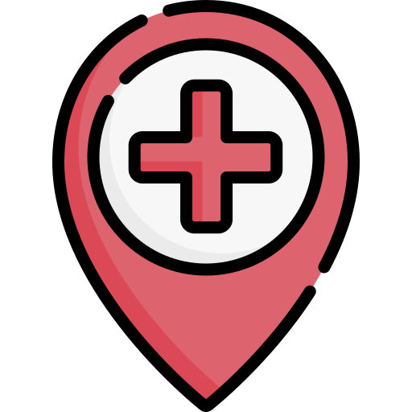

O que oferecemos?
Mapeamento mais preciso, sistemas de dificuldade, rankeamento e
primeiros socorros, base de conhecimento entre outros diferenciais
da plataforma!
 O app conta com uma interface que remeta à um jogo, com objetivos
a serem cumpridos para que o ciclista possa “avançar de fase” e
desbloquear trilhas com níveis mais altos de dificuldade. O
ciclista terá que pedalar uma certa distância para que possa
desbloquear novas trilhas e missões semanais e mensais.
O app conta com uma interface que remeta à um jogo, com objetivos
a serem cumpridos para que o ciclista possa “avançar de fase” e
desbloquear trilhas com níveis mais altos de dificuldade. O
ciclista terá que pedalar uma certa distância para que possa
desbloquear novas trilhas e missões semanais e mensais.
 Mapeamento das trilhas, ciclovias e caminhos frequentemente
utilizados por ciclistas da cidade de Mogi das Cruzes, incluindo
informações como tempo médio de percurso baseado em outros
usuários, quilometragem, inclinação e altitude, mapa e Sinais de
Alerta para sinalizar algum perigo ou impedimento no percurso.
Mapeamento das trilhas, ciclovias e caminhos frequentemente
utilizados por ciclistas da cidade de Mogi das Cruzes, incluindo
informações como tempo médio de percurso baseado em outros
usuários, quilometragem, inclinação e altitude, mapa e Sinais de
Alerta para sinalizar algum perigo ou impedimento no percurso.

Caso ocorra algum acidente durante o percurso, será
disponibilizada a opção “S.O.S.”, onde o usuário poderá acionar
sistemas e/ou contatos de emergência para si mesmo ou para um
companheiro de trilha. Essa área também será composta de
informações médicas sobre o ciclista, auxiliando no resgate.